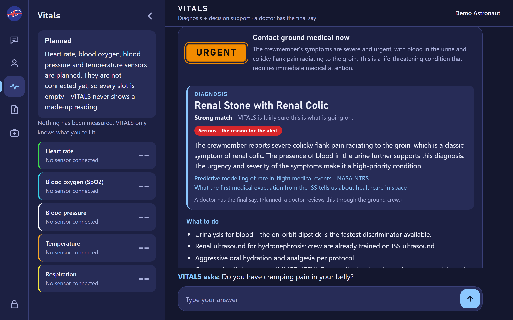

Team TETHER
VITALS
When the doctor is 20 minutes away, the crew still needs an answer now.
An onboard medical assistant a non-medical crewmember can talk to — offline, grounded in spaceflight research, and honest about what it doesn't know.

The problem
On Mars, a message to the flight surgeon takes 4 to 40 minutes each way, and NASA plans for communication blackouts of up to two weeks. Most crews will have no physician on board. When someone gets sick or hurt, the person helping them has to answer three questions fast: what could this be, how serious is it, and what do we do now?
What it does
Talk in your own words
“Bad pain in my right side, comes in waves, blood in my urine.” No medical vocabulary needed.
Urgency first
The level is the first thing on screen — as a word and a color, never color alone.
Every answer has a source
It can only name conditions we researched, and it never writes its own citations — they come from our knowledge base.
Safety backstop
A rules engine checks every answer. If it says escalate, the answer escalates, whatever the AI said.
Fix what it misread
Every item VITALS understood has a Wrong? button. Correct it and the answer updates.
Fully offline
Built for an NVIDIA Jetson in the habitat, with the language model inside. No internet.
How it works
Why not just train an AI? There's almost no in-flight medical data — some serious conditions have never happened in flight. So VITALS uses a pretrained local model that may only read our cited knowledge base, and a rules engine that can always raise the alarm.
Built today, and what's planned
- WorksAstronaut screen: PIN login, emergency access, chat, answer card, corrections, profile
- WorksReasoning over 35 cited spaceflight conditions, with a safety backstop
- WorksEvery answer saved as a case on the server
- PlannedGround crew screen — reviews every case, decides what the doctor sees
- PlannedDoctor screen — agrees, disagrees, or gives their own read
- PlannedSensors — heart rate, blood oxygen, blood pressure, temperature
- PlannedRunning on the Jetson with three Raspberry Pi screens
- PlannedVoice input

Where it stands
spaceflight conditions, each with its sources
automated tests passing
must-escalate complaints escalated through the AI (Oct 17) — the miss is our first fix
basic missions passing, every step logged
Technical specifications
- BrainLocal language model (llama3.2, 3B) through Ollama, grounded in a cited knowledge base; temperature 0
- SafetyDeterministic rules engine as cross-check and escalation backstop
- Knowledge35 conditions, 145 findings, JSON-schema validated; NASA Integrated Medical Model rates collected
- SoftwarePython, standard-library web server, one self-contained HTML file per screen — no internet, no CDN
- Testing262 automated tests, 60-prompt benchmark, logged missions (timestamp · subsystem · element · status)
- PackagingDocker with the model built into the image — runs with no network
- HardwareNVIDIA Jetson Orin Nano 8 GB server; Raspberry Pi screens; MAX30102 pulse-ox first
Videos
Prototype demo (4 min) and presentation (3 min) — coming before the design review.
Team TETHER
Joshua Collado
Project lead · main coder
Joaquin
Medical research · co-coder on the diagnostic engine
Cruz
UI design · user testing
Teacher: Ms. Sylvia Odoms · Regional mentor: Michael Hayes, Voyager Technologies